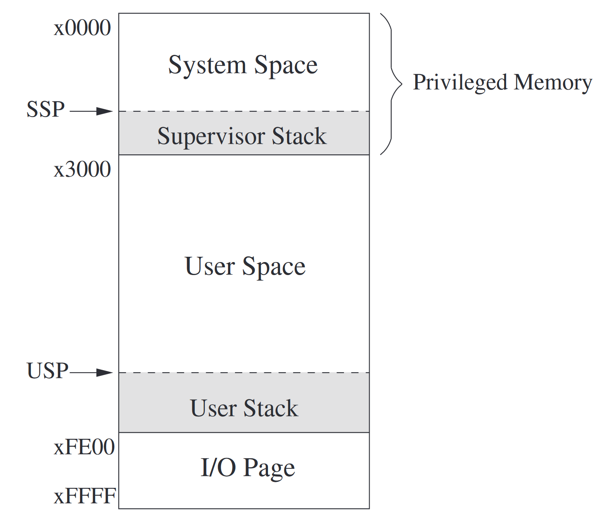
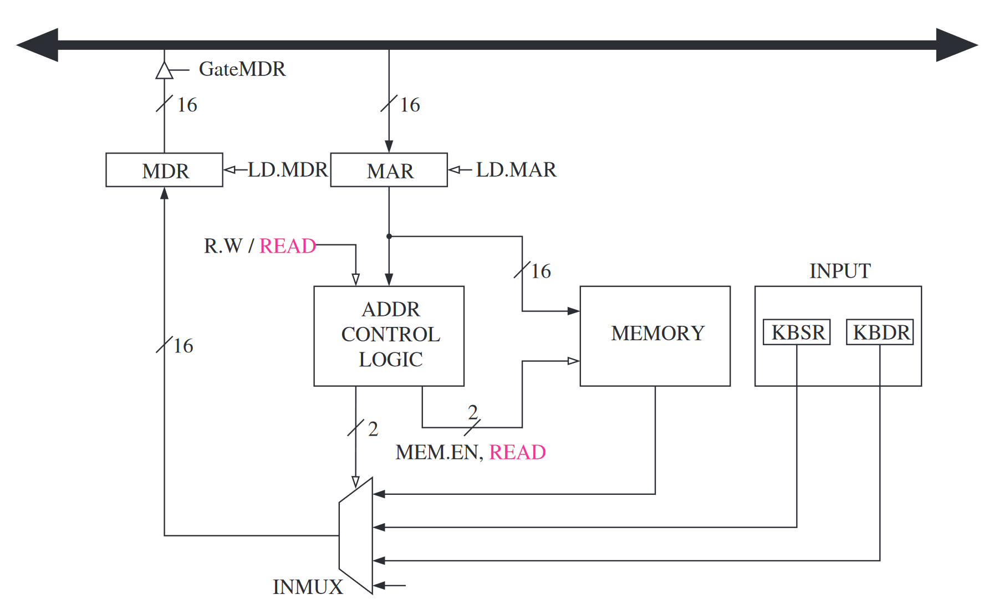
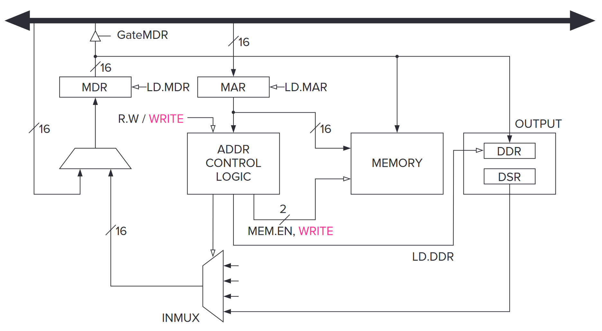
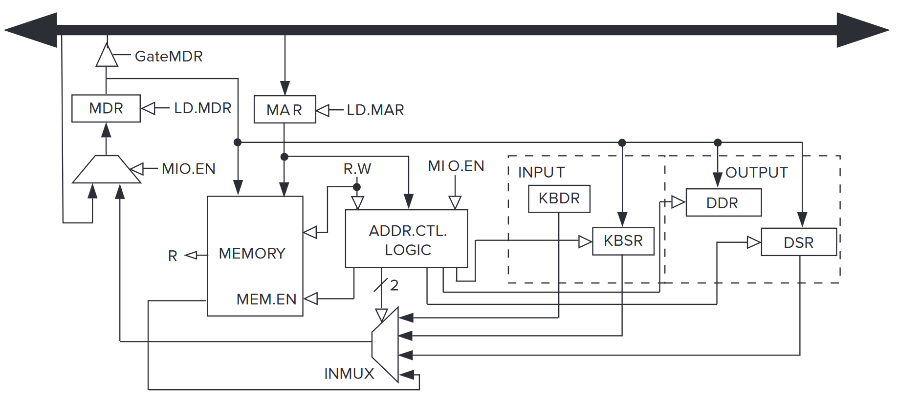
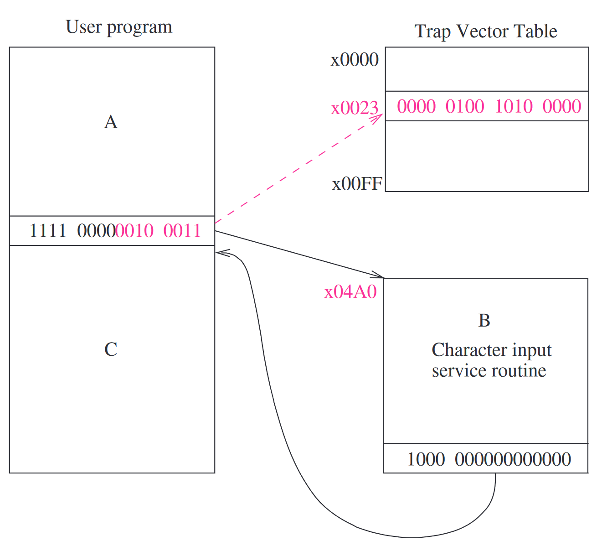
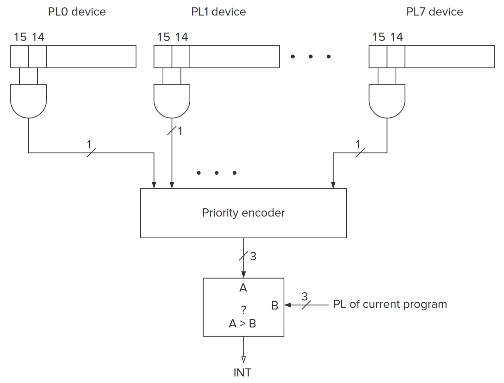
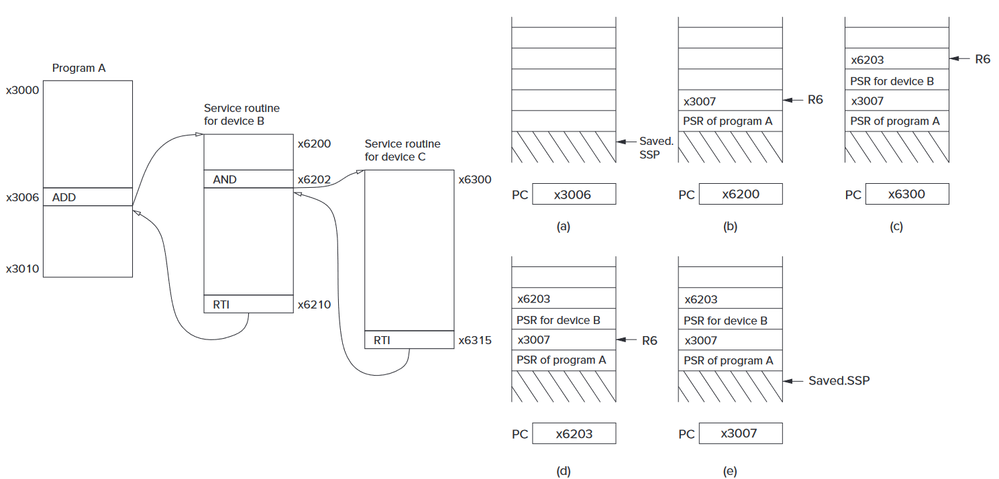

第 9 章：输入输出¶
权限与优先级¶
权限¶
很明显，并不是所有的程序都拥有运行任意指令的权限。比如一旦你放开了指令 HALT 的使用，那么随便一个人都可以让电脑关机；如果你放开了某些内存地址的读写权限，那么随便来个家伙都可以让系统当场爆炸。
既然如此，我们需要设计“权限”这个东西。在 LC-3 中，权限管理非常简单：就分为“有特权”和“没有特权”。一般来说，有特权的程序被称为“运行在管理员模式（Supervisor Mode）下”，或者说拥有管理员权限，没有特权的程序被称为“运行在用户模式（User Mode）下”，或者说只拥有用户权限。
管理员模式下的程序有读写执行任意内存的能力。
优先级¶
这里指的是程序运行的优先级。是的，程序在这里是不平等的。比如说你瞎 jb 写的程序拥有强度 0 的优先级，关于键盘输入的程序拥有强度 4 的优先级，而……如果可以这么理解的话，电源拥有强度无限大的优先级，因为毕竟如果你拔线了，那电脑上的所有程序都连着你一起爆炸了……或者说，赶紧运行一个强度无限大的程序以最小化损失？
处理器状态寄存器 Processor Status Register¶
处理器状态寄存器（Processor Status Register，PSR）又是一个 16 位长的寄存器。
- [15]：Pr：Priv：权限。如果是 0 的话就是管理员模式，如果是 1 的话就是用户模式。
- [10:8]：PL：Priority：优先级。表示现在这个程序的执行优先级，值越高优先级越高。
- [2]：N：状态码
- [1]：Z：状态码
- [0]：P：状态码
用户程序的优先级是最低的 0。键盘的是 4。
内存的组织¶
LC-3 是个 16 位机器，而它的寻址空间自然最多也是 x0000 到 xffff。
其中，x0000 到 x2fff 是权限内存（Privileged Memory），其中包含的是操作系统的程序、数据结构，以及一些不能动的东西。只有管理员模式下的程序才能动它们。这一块区域又叫做系统空间（system space）。
而 x3000 到 xfdff 是非权限内存，存储用户的程序和数据。而这块区域就叫做用户空间（user space）。
那 xfe00 到 xffff 是啥子呢？事实上，它们不是“内存”。也就是说内存区域到 xfdff 就打止了。这些地方存储的是输入输出函数，以及和处理器有关的一些寄存器。比如 PSR 就是 xfffc，而处理器的主控寄存器（Master Control Register，MCR）就是 xfffe。很明显，访问这些区域也需要管理员权限。这块空间被叫做 I/O 空间（I/O Space）。
内存中有两个栈，系统空间里面有一个，用户空间里面也有一个。一个给操作系统用，需要管理员权限；一个给用户用，不需要管理员权限。系统空间的栈的栈指针叫 Supervisor Stack Pointer（SSP），而用户空间的叫 User Stack Pointer，各自指向自己栈的栈顶。这里的栈扩大的时候地址也是往低处走的。
那栈指针 r6 存的是谁呢？因为一个程序要不运行在管理员模式下，要不运行在用户模式下，也就是说这两个栈不会同时被使用。栈指针 r6 存的就是正在使用的那个栈，而没在用的栈指针有两个寄存器，Saved_SSP 和 Saved_USP 专门存下来。

图：LC-3 的内存区域
输入，输出¶
输入输出设备，像键盘啊，显示器啊，硬盘啊什么的，使用寄存器来进行输入输出。一般来说，即使是最简陋的输入输出设备，也至少需要两个寄存器：一个存数据，一个存状态。
映射到内存，还是用特殊指令¶
很久以前，计算机们对于数据的输入和输出分为两派。一派是拿一些特殊指令来执行输入和输出，另一派是把输入和输出映射到内存，然后用各种数据传递的指令来进行输入和输出。LC-3 使用的是后一种。对，就是 xfe00 到 xffff 的那一堆东西。
异步，还是同步¶
大部分输入输出设备的速度都是赶不上处理器的。比如说键盘，你叫顺风下速度 +6 的雷吉艾勒奇过来打字，他相比处理器的速度来说都差了十万八千里——即使是主频只有 2 GHz 的处理器，一个时钟周期都只有 0.5 纳秒！纵使你说输入输出可能需要好多个时钟周期，但是即使是要一万三千个时钟周期，那也只有几毫秒长，这不还是赶不上。
既然如此，我们可不可以让键盘以慢一些的时钟频率，均匀地接收信号呢？到底要多慢呢？太快了的话有些浪费性能，太慢的话你永远也不知道像速录员啊音游玩家啊的手速到底有多快。
问题出在哪里呢？因为输入输出设备的工作风格和处理器不同——速度不同，均匀性也不同。我们把输入输出设备的这种风格叫做异步（asynchronous），不是伊布。反义词就是同步（synchronous）。大多数输入输出设备和处理器之间的交互都是异步的。
怎么处理异步呢？这需要它们之间的一些“握手”（handshaking）的机制。比如说键盘，它为此有一个寄存器，记录键盘上面有没有键被按下去。又比如说显示器，它也可以拿个寄存器告诉处理器说它是否已经完成当前内容的显示。这些寄存器就叫做 flag。
这些 flag 是让它们之间同步（synchronization）的最简单的形式。拿上面的键盘做例子，键盘上面有键的话就把 flag 设为 1；而处理器发现 flag 为 1 的时候就会拿走数据，并且把 flag 设成 0，告诉键盘，啊，刚刚那个键已经被拿走了。
不过也有输入输出设备本来就和处理器是同步的。比如说有个发臭的打点计时器，每隔 114514 个时钟周期就会咆哮一下。那么上文中的 flag 就不必要了。这个时候，它们两个被叫做“同步地（synchronously）”运行。
中断，还是轮询¶
中断和轮询的区别在于，交互的起手是由谁控制的。
比如说雷吉艾勒奇在打字。当他按下一个键的时候，键盘信号就一下子冲过来然后拦住了处理器说，啊，我这边有个键被按下去了，你赶紧读一下！处理器被它这么一中断，就只好把键盘内容给读了再继续自己的工作。这个就叫做中断。
还是雷吉艾勒奇在打字。当他按下一个键的时候，键盘的 flag 被设成 1。但它并没有中断处理器，而是处理器每隔一段时间来看看 flag 的值，如果是 1 的话就把键盘的值拿走，看看发生了什么。这个就叫做轮询。
键盘的输入¶
寄存器 KBDR 和 KBSR¶
键盘数据寄存器（keyboard data register，KBDR）在 xfe02 的位置，而键盘状态寄存器（keyboard status register，KBSR）在 xfe00 的位置。
KBDR 只有 [7:0] 位是有值的，因为 ASCII 码也就 256 个，其它地方都是 0；KBSR 就更过分了，现在就只用了 [15] 这一位。但是对于 LC-3 来说，16 位 16 位地寻址总是方便一些，不是么？
输入的流程¶
KBSR[15] 就是上面所说的 flag。当键盘上面有个键被按下去的时候，那个键的 ASCII 码会被放到 KBDR[7:0] 里面，而 KBSR[15] 会设成 1。而当处理器接收这些信息的时候，它会读取 KBDR[7:0] 的数据，然后把 KBSR[15] 清零。在 KBSR[15] 不是 0 的时候按下其它的键都是没用的。
在轮询状态下，因为 KBSR[15] 的关系，每个键只会被读取一次；而因为 KBSR[15] 为 1 的时候键盘被禁用了，因此先前按下的键的数据也不会丢失。总的来说，KBSR[15] 确保了每个按下的键都刚好被读取了 1 次。
内存映射输入的实现¶

图：内存映射输入
和一般的内存读写操作差不多。
- MAR 被写入的内容是设备的那些寄存器的地址。
- MDR 写入 MAR 指向的内容。
- DR 写入 MDR 的内容。
显示器的输出¶
寄存器 DDR 和 DSR¶
显示器数据寄存器（display data register，KBDR）在 xfe06 的位置，而显示器状态寄存器（display status register，KBSR）在 xfe04 的位置。
和 KBDR 与 KBSR 的情况一样，DDR 只有 [7:0] 位是有值的（也是存储 ASCII 码），其它地方都是 0；DSR 也是只有 [15] 这一位是有值的。
输出的流程¶
当 LC-3 往 DDR[7:0] 丢数据的时候，它会同时清空 DSR[15]，通知显示器干活。显示器完成显示后，它会把 DSR[15] 设成 1。
内存映射输出的实现¶

图：内存映射输出
也是和一般的内存读写操作差不多。
- MAR 被写入的内容是设备的那些寄存器的地址。
- MDR 写入将要写入内存的内容。
- 控制信号一来，内存完成写入。
输入回显¶

图：有关内存映射输入输出的数据通路
操作系统服务流程（Trap）¶
输入输出的流程我们在上面都看到了。
- 我们有数据寄存器，用来存储有关输入输出设备的数据。
- 我们还有状态寄存器，用来协调高速的处理器和低速的输入输出设备。
- 它们之间的工作，需要异步的机制。
事实上，这并不是大部分程序员都了解的内容，尤其是那些修软件工程的。
并且，如果给那些程序员直接读写 KBDR、KBSR 什么的权限的话，还会带来另一个问题：这几个寄存器是被很多个程序共享的。如果你误操作把它们搞乱了，那大家都估计得跟着你一起爆炸了。
咋办？有一种比较简单和安全的解决方法，是借助于操作系统和陷入（Trap）指令。用户程序通过自陷指令，请求有管理员权限的操作系统运行一些特权级任务，比如说输入输出。这叫做服务调用（service call），或者系统调用（syscall）。
陷入的机制¶
陷入机制包含这些要素：
- 服务程序（service routine）集合。它们由操作系统提供，但以用户的身份执行。LC-3 最多支持 256 种这样的程序。
- 起始地址（starting addresses）表，或者叫陷入向量表。它存了上面 256 个程序的起始地址。这个表的位置就是 x0000 到 x00ff。比如之前说 x25 是 halt，就是这里的 x0025。这个就叫做陷入向量。
- 自陷指令。这是用户程序使用那些服务程序的桥梁。
- 指回用户程序的链接，用来从服务程序返回用户程序。
TRAP 指令¶
TRAP 指令之前已经提到过：
- [15:12] TRAP：1111
- [11:8] 未使用：0000
- [7:0] trapvect8：陷入向量
这个指令执行的时候：
- 首先要把陷入向量那 8 位给零拓展（zero-extend），就是直接在更高位补 0。（另一种拓展方式和符号位有关。）
- 然后，找到陷入向量表对应的位置，把对应的值存到 MAR。这就是对应的服务程序的起始地址。
- 把当前的 PC 存到 r7 里面。这是上文所说的链接。
- 之后当内存完成读取后，把 MDR 存到 PC 中，完成跳转。
服务程序跑完后，通过 rti 指令就可以回去了。为什么不用 ret？因为这还涉及到一些模式切换的问题。

图：TRAP 指令的流程
一个字符输入的服务流程：
一个字符输出的服务流程：
中断驱动的输入输出¶
啥是中断驱动的输入输出呢？它的意思是输入输出设备可以：
- 打断和自己没有半毛钱关系的程序，
- 迫使处理器运行满足自己需要的程序，
- 并且运行完后继续原来的程序，而原来的程序以为刚刚无事发生。
在程序 A 的眼中，刚刚是这样子的：
中断和陷入的区别就在于，陷入是程序自己提出来的，而中断是人在家中坐，锅从天上来。
中断驱动的意义¶
和中断相对的那个概念是啥？对，轮询。
很明显，轮询这个东西，啊，还是比较费时间。处理器要花很大的精力一遍一遍地把状态寄存器拿出来看看，然后执行各种分支操作。而中断驱动让它们不复存在。
中断驱动的流程¶
中断驱动的整个流程可以细分成两步：
- 首先，让输入输出设备能够中断处理器。
- 之后，要处理它的中断请求。
中断生成的前提¶
事实上，生成中断不是一件想当然的事情。
- 首先，输入输出设备需要的确有生成它的必要。
- 另外，这个设备需要有能要求这个请求的权限。
- 并且，这个请求的优先级还得比当前程序要高。
什么时候有这个“必要”性呢？对于一个键盘来说，就是有按键被按下去的时候；对于一个显示器来说，就是完成显示，等待下一帧的时候。这不就是 KBSR 和 DSR 么！
那么，又怎么描述“权限”呢？拿个寄存器中的一位来表示好了。这一位叫做启用中断位（interrupt enable，IE）。通常来说，这个寄存器就是对应设备的状态寄存器，比如对于这里的键盘和显示器，这一位就是 KBSR[14] 和 DSR[14]。
中断信号¶
中断（INT）信号用来打断（或者尝试打断）当前程序的运行。
怎么判断关于优先级的事情呢？在计算机运行的时候，可能同时会有很多个不同优先级等级（priority level，PL）的东西在运行。此时会有专门的一个设备，统计它们之间优先级最高的那个。
然后当现在这个程序想请求一个中断，那么此时会把它的优先级和当前最高的优先级作比较。如果现在这个程序的优先级大于当前最高的优先级，那么中断信号就会生成。

图：中断信号的生成
中断检测¶
那么中断信号怎么起效果呢？
让我们回到比较早的一些时候。那个时候，我们知道了一个指令的执行过程中有 6 步：取指令（FETCH）、译码（DECODE）、地址计算（EVALUATE ADDRESS）、取操作数（FETCH OPERAND）、执行（EXECUTE）和存放结果（STORE RESULT）。
这个时候，我们发现了个大问题：如果此时有个中断信号到来，我们没有时间去存储那些栈指针啊返回指针啊什么的东西。因此，应该在最后一步（STORE RESULT）时同时检查有没有中断信号到来。如果没有的话，就像往常一样返回 FETCH 步骤；如果有的话，就在返回 FETCH 步骤之前，先保存足够的状态信息（为了中断完成后能正常恢复当前的状态），还要把目标的服务地址装到 PC 里面。
处理中断信号¶
还记得刚刚的程序 A 和程序 B 的例子么？现在来给它编个号。
我们可以看到，处理一个中断信号可以分成三步：
- 1：中断的预处理。
- 2：中断服务的执行。
- 3：从中断中回来。
中断的预处理¶
保存被中断的程序的状态¶
程序的状态，可以说是程序执行时所依赖的资源的一个快照。这个快照包含各种各样的代码段、内存以及寄存器，当然还包括 PC 和 PSR。
而要打断一个程序并让它之后能正常复活的话，就得在打断它之前保存足够的信息。对于 LC-3 来说，就是存储 PC 和 PSR。为什么不把其它寄存器也存下来？因为 LC-3 里面的服务程序中都会自己把它们备份下来，等自己搞完的时候再恢复。
PC 和 PSR 是存在管理员空间里面的那个栈中的。同时，因为权限的变化，此时还要把当前的栈指针交换到管理员的那个栈那里去。也就是说，要把 r6 存到 Saved_USP 里面，然后把 Saved_SSP 的值给 r6。
加载中断服务的状态¶
在之前的 PC 和 PSR 完成存储后，接下来就是把它们两个设成中断服务的 PC 和 PSR 了。
大多数处理器使用的是中断向量的方式，而 LC-3 也不例外。在这里，处理器接收到一个中断信号时，连带着的还有一个 8 位的中断向量和一个优先级。在这里提供的是之前筛选出来的最高优先级所对应的中断向量。这个叫 INTV。
拿到中断后，处理器会把 8 位的 INTV 扩展到 16 位，让它成为一个地址。不知道你还记不记得，x0000 到 x00ff 里面放的是“陷入”向量表；而这里的中断向量表的位置就是 x0100 到 x01ff，也是每一个内存地址包含一个中断服务函数的开始位置。这就是接下来 PC 所需要存储的东西。
PSR 说，那我呢？因为中断服务函数还没开始跑，那么最低三位那个 NZP 状态码也就暂时没什么用。不过给个面子，给 PSR[2:0] 赋值为 010。另外，中断服务下的权限是管理员权限，所以 PSR[15] 是 0。优先级 PSR[10:8] 的值和具体的中断请求有关。
中断服务的执行¶
在上面一切准备就绪之后，PC 和 PSR 都已经变成了应该有的值。开跑就完事了。
从中断中回来¶
所有中断服务函数的结尾都是一个 rti（opcode 是 1000）。不是 ret 哈！为什么，难道 rti 比 ret 要高贵？
还记得中断的预处理中发生了什么吗？我们改了栈指针，改了权限，还改了各种各样乱七八糟的东西。如果直接使用 ret 的话，仙布管能不能回到正确的位置，光是权限错误就可以直接原地爆炸了。
这个 rti 会把之前存到栈里面的 PC 和 PSR 弹出来，放到该放的位置，然后把栈指针几个变量修一下（把 r6 交还给用户的栈什么的）就可以了。然后原来的程序接着一跑，芜湖，好像无事发生。

图：一个中断套中断的例子
轮询¶
轮询与中断的相性¶
中断一下，还是来看看远方的轮询吧家人们。
现在我们要以轮询的方式，往显示器上面写一个字符串。每隔一段时间，我们就来看看 DSR[15] 的情况：如果能写下一个字符就让它写，否则就再等等。
那该怎么做？先 LDI 一下把 DSR 拿出来，然后 BRzp 判一判，要写的话就 STI 写一下 DDR。LDI，BRzp，STI……问题来了，如果在它们执行的中间，突然冲出来一个中断，就有可能导致中断之前 DSR 显示还能写，中断之后又不能了，然后 STI 就写了个寂寞。
之前我们不是说过中断以后原程序就像“无事发生”吗，这是怎么回事啊？因为“无事发生”又不涉及到那些外面的设备！
难道我们要在开轮询的时候把中断禁用了？那如果你这个轮询占用了大多数的 CPU 时间，中断就会被禁用很长很长的时间。这对一台计算机来说是非常危险的事情。
让轮询兼容中断¶
不过，也不是没有其它的解决方法。
上面的代码中，第 15 行到第 17 行是我们希望不要被中断干扰的地方。
PSR[14] 是启用中断位（IE），如果要清除这一位的话就与上一个 xbfff 就行了。通过这种方法，我们就可以让禁用中断的时间尽量短，以不至于影响其它程序太多。